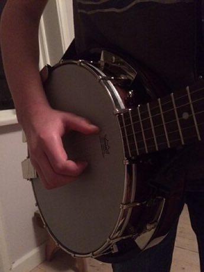
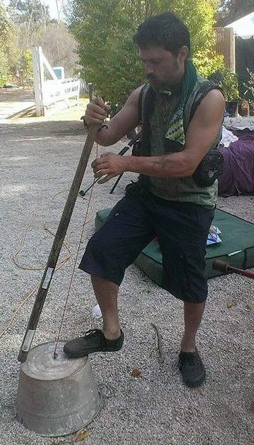

Home / Living Traditions / The Americas: North America
Playable heritage gameClawhammer banjo
Also known as frailing
Clawhammer, or frailing, is a way of playing the five-string banjo from the Appalachian mountains of the United States. A fingernail strikes down on the melody strings and the short fifth string answers on the off-beat, making the rolling pattern called bum-ditty.

How to play
- Four strings run up the neck and a short fifth string sits beside the thumb; each lane marks a note, and the Thumb lane is that short string.
- A bead slides down toward its place. Strike the note just as the bead lands.
- In most tunes a Thumb bead follows each note on the off-beat; pick it right after the downward stroke.
- Start with the bum-ditty basics, then try the reel and the slow waltz.
Rules at a glance
- The strings are tuned to an open G chord, with the short fifth string pitched at G above.
- A stroke on the beat is perfect, a near one is good, and extra strokes cost points.
- The Thumb lane is a drone string and sounds on the off-beat in the bum-ditty pattern.
- Every tune is played through twice.
About the tradition
The banjo came to North America in the music of enslaved Africans and was shaped by generations of Black and white musicians into the old-time sound of the Appalachian region. Clawhammer playing there accompanies fiddle tunes, ballads and square dances.
Origins
A living tradition passed from person to person; it is not tied to a single dated origin. It belongs to the cultural world of The Americas: North America.
Credits
- Tradition: Appalachian clawhammer banjo; melodies written for this game
- Photo: Metalgurra, CC BY-SA 4.0, source on Wikimedia Commons
- Text: CC BY-SA 4.0, World Heritage Games.
Sources

Get the app
Clawhammer banjo is one of 9 lutes and fiddles in the Lutes & Fiddles of the World app for Android. Submitted to Google Play; in review. Store links appear here the day it goes live. One app, many traditions, no account needed.
More games to play

Mountain dulcimer
United States · Musical instrumentsPlay preview · in the Zithers & Harps of the World app
Washtub bass
United States · Musical instrumentsPlay preview · in the Odd Instruments of the World app


More from United States


Checkers
Bahamas +1 · Board and table games
Chickenfoot
United States · Board and table games